Tutorial: Activación de PIN de Transacción e iToken
Introducción
Este tutorial te proporcionará los pasos detallados para activar el PIN de transacción y el iToken, garantizando así la máxima seguridad para nuestros clientes.
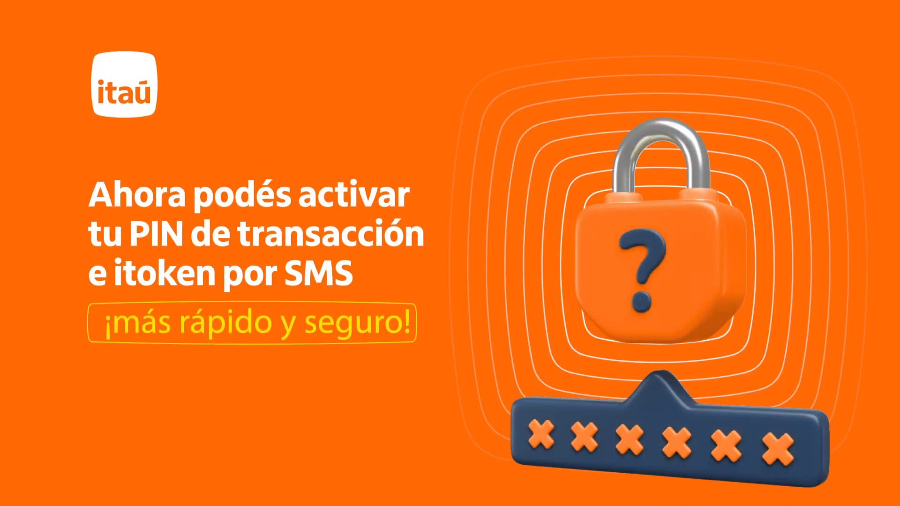
¡Importante!
Recuerde que el cliente necesita su PIN de transacción para confirmar pagos y transferencias.
📌 Información Importante
📲 Actualización: El cliente debe tener la última versión de la app Itaú PY instalada.
📱 Un solo dispositivo: ❗ Solo puede instalarse en un celular por cliente.
⏰ Zona horaria: Debe estar en "Definir automáticamente" para evitar problemas.
✅ Ingreso a la App: Puede ingresar con número de documento y número de cuenta (corriente o caja de ahorro).
❌ No podrá usar el iToken si inicia sesión con número de tarjeta de crédito..
🔐 iToken activo: El iToken funciona solo en el celular donde fue activado.
Paso 2: Pasos para Configurar
Accede a la app Itaú PY.
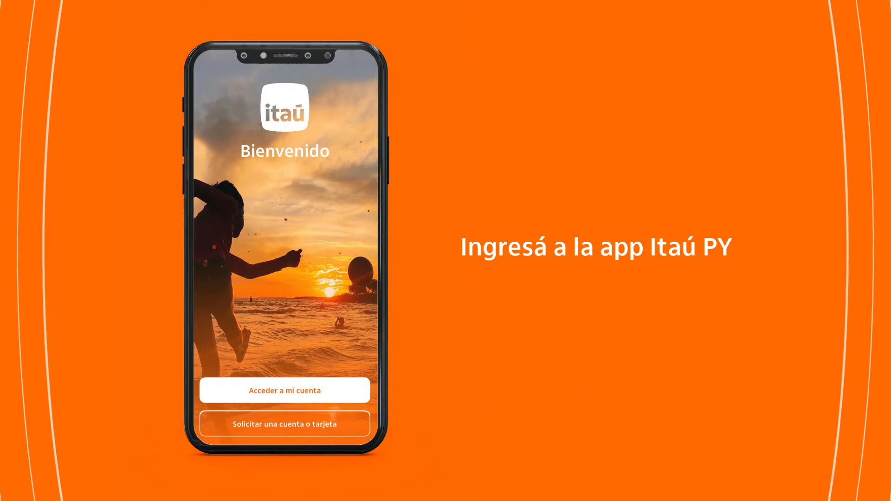
Click en la flecha superior derecha.
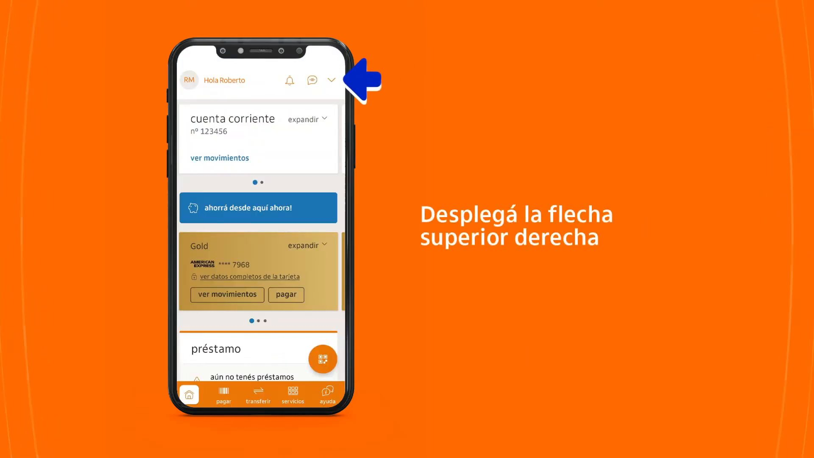
Paso 3: Pasos para Configurar
Debe ingresar en la opción de "Seguridad", luego seleccionar la opción para "Solicitar PIN de transacción".
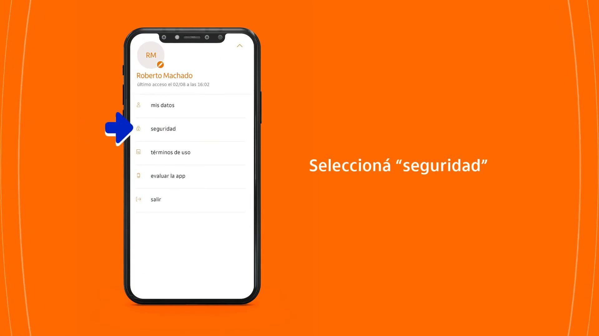
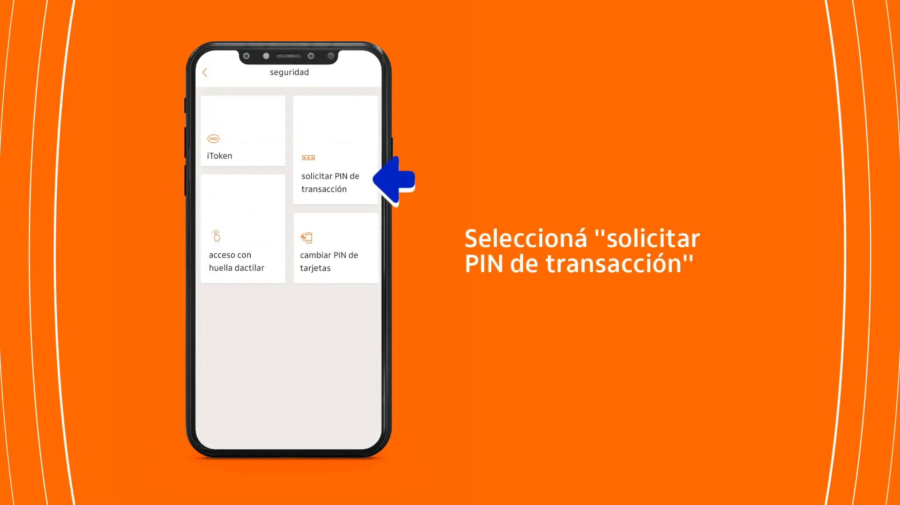
Paso 4: Instalar el iToken
En esta pantalla, asegúrate de instalar el iToken para validar transferencias y giros a billeteras. Marca "acepto los términos y condiciones" y haz clic en "continuar".
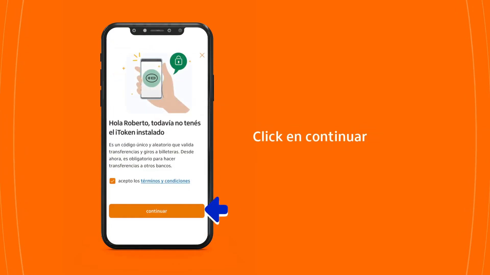
Paso 5: Crear PIN de Transacción
En esta etapa, crea tu PIN de transacción siguiendo las indicaciones para garantizar la seguridad en tus pagos y transferencias.
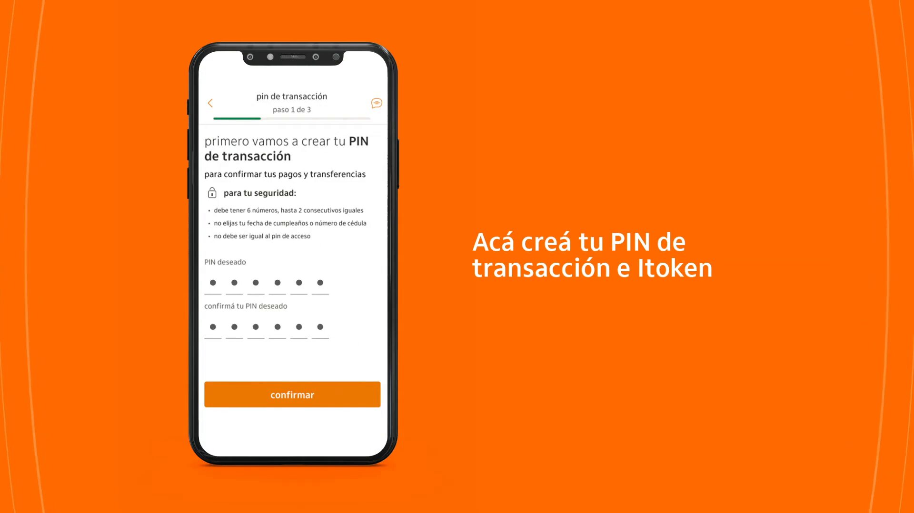
Paso 6: Recordar tu PIN de transacción
Tu PIN de transacción ya está creado, pero recuerda que es fundamental para confirmar tus pagos y transferencias.
La pantalla mostrará un mensaje confirmando la creación del PIN y resaltará la importancia de memorizarlo.
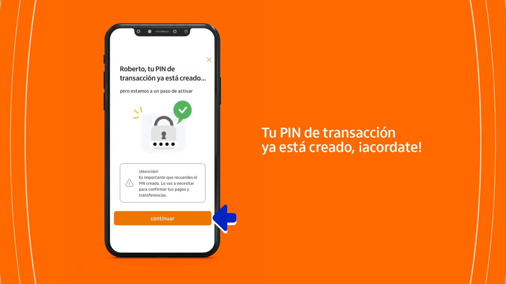
Haz clic en "continuar" para proceder a la activación final.
Paso 7: Verificación y Confirmación Final
En esta etapa, necesitas activar tu PIN de transacción e iToken. Por seguridad, recibirás un código de verificación a tu número de teléfono registrado. Verifica que los últimos tres dígitos de tu número sean correctos.
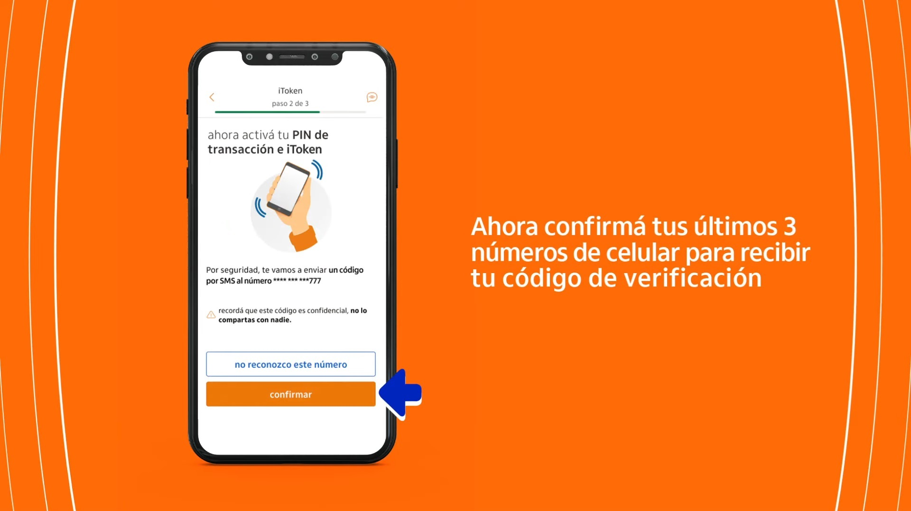
Después, ingresa el código que recibiste para completar la activación.
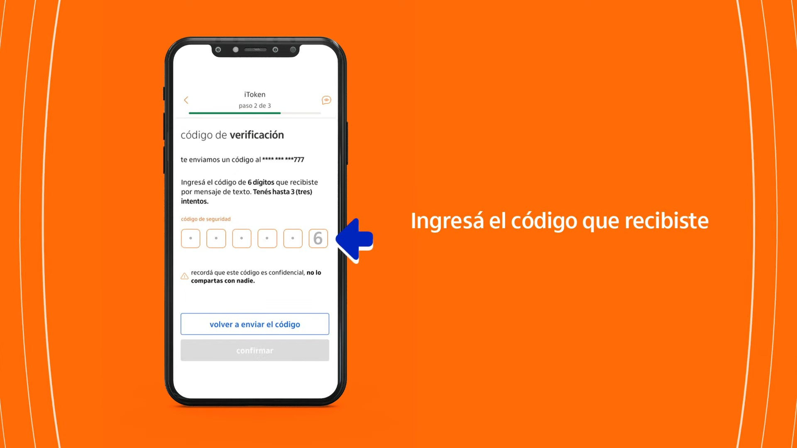
Recuerda que este código es confidencial y no debe compartirse con nadie.
Cómo Activar su iToken en un Cajero Automático de la Red Infonet
Si no puede realizar la activación por SMS, siga estos pasos:
1. Diríjase a un cajero automático de la red Infonet.
2. Inserte su tarjeta de débito y ingrese su PIN.
3. Realice una de las siguientes operaciones:
Consulta de saldo
Extracción de dinero
4. Espere a que finalice la operación.
5. En pantalla aparecerá un mensaje solicitando la activación del iToken.
6. Acepte la activación para completar el proceso.
Una vez realizado este procedimiento, su iToken quedará activado y listo para su uso.
Confirmación
¡Has completado el proceso! Ahora puedes operar de manera segura desde la app Itaú PY.
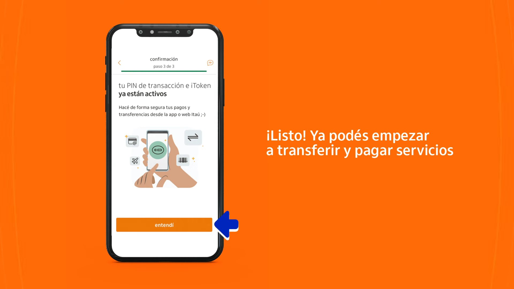
Preguntas Frecuentes
¿Cuál es el plazo que tengo para activar el iToken después de haber solicitado la instalación?.
Podrás aceptar la activación en un cajero automático de la red infonet hasta 72 horas después de haber realizado la solicitud.
¿Qué hacer en estas situaciones?.
✅ Si fue al cajero automático pero no apareció el mensaje de activación:
Verifique que haya realizado una consulta de saldo o extracción de dinero.
Si el mensaje no aparece, puede intentar en otro cajero de la red Infonet.
🌍 Si está de viaje en el exterior y no puede ir a un cajero automático:
Puede intentar activar el iToken a través de SMS si esta opción está disponible.
🏡 Si está en el interior del país y no tiene un cajero cercano:
Puede verificar si hay un cajero Infonet en la localidad más cercana.
💳 Si no tiene tarjeta de débito física.
♿ Si tiene una discapacidad que le impide ir a un cajero automático.
📌 Si luego de intentar todas las opciones no logra activarlo, procedemos a solicitar de manera Excepcional.
✅ Podemos solicitar la activación excepcional del iToken.
📅 Tiempo de procesamiento: Hasta 72 horas hábiles.
El banco enviará un documento a su correo registrado.
Debe imprimirlo, firmarlo y reenviarlo al mismo correo.
Una vez recibido y validado, se completará la activación.
¿Cómo hago en caso de pérdida o robo de mi celular?.
En caso de robo o extravío del celular, será necesario que descargues la app Itaú PY en tu nuevo dispositivo móvil, instales de nuevo el iToken y actives en un cajero automático.
Sé paciente para brindarle al cliente la asistencia que necesita. Recuerda que sin su iToken, no podrá realizar transferencias.